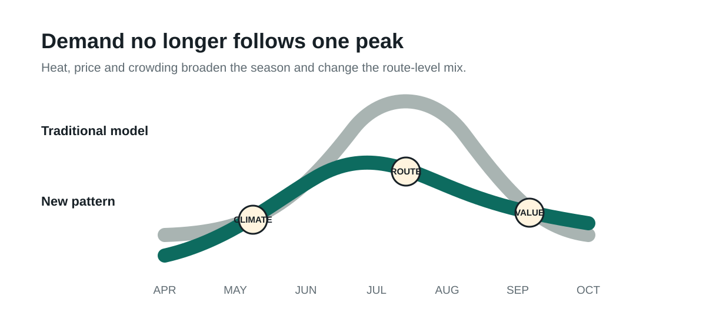

Europe’s summer peak is still dominant, but it no longer explains the whole travel market. Extreme heat, price pressure and crowding are moving part of demand into June, September and October, while cooler northern destinations gain appeal during July and August.
For travel retail, the shift is not about selling less in summer. It is about managing more weeks of opportunity, with demand varying more sharply by airport, route, destination and passenger profile.
What is changing in Europe’s travel season
Europe is warming at about twice the global average, according to the World Meteorological Organization. Travel demand remains strong at the same time. The European Travel Commission reports that 81% of Europeans plan to travel between June and November 2026.
Summer is not disappearing. Eighty-six percent of intended travellers still plan a trip between June and September, and Southern Europe remains the leading destination region. The change is appearing at the edges of the season and in destination choice:
- 76% say climate factors influence how they travel.
- 16% actively seek destinations with milder temperatures.
- 15% avoid destinations exposed to extreme heat or check forecasts before booking.
- 52% prefer lesser-known or off-the-beaten-path destinations.
Earlier travel is also gaining interest. Across long-haul markets, preference for May and June rose from 24% to 34% between 2024 and 2025, according to the ETC. Its research on responsible travel also finds that summer heat is pushing some travel to Southern Europe outside the traditional peak.

What this means for travel retail
European airports handled a record 2.6 billion passengers in 2025, up 4.4% year on year, according to ACI Europe. That traffic provides a strong base. The challenge is converting it into revenue when passenger flows change faster.
More selling weeks
Sun care, hydration, personal care and convenience products can remain relevant for longer on routes serving Mediterranean destinations.
Less generic “European summer”
A flight to Greece, Norway or an inland city requires a different mix. Assortment should respond to destination and weather, not only the month.
Greater volatility
Heatwaves, wildfires or route changes can move demand within days. Stock, labour and promotions need shorter decision cycles.
Contextual messages
Retail media, CRM and digital signage can adapt offers to the gate, destination, forecast and expected passenger profile.
Where the commercial opportunity appears
Extend categories and formats
Brands can lengthen campaigns for hydration, sun care, snacks, wellness and personal care, while creating portable formats and destination-led packs.
Reduce journey friction
Payments, insurance, mobility and assistance services can respond to itinerary changes, extreme heat and off-season trips with more flexible products.
Make demand visible
Platforms can combine sales, flights, passengers, weather and events to forecast store-level demand and automate content decisions.
Create new occasions
Airlines, hotels, airports and destinations can build routes, packages and experiences for spring, autumn and moderate-climate destinations.
Which categories would sell more if planning followed route and weather signals rather than one fixed summer campaign?
How AI can capture the growth
Artificial intelligence creates value when it connects fragmented data and turns it into measurable decisions. Marksyte helps travel retail, FMCG, services and technology companies build four capabilities.
Demand forecasting
Store, route, category and weekly models that combine sales, passengers, bookings, weather and events.
Assortment and promotion
Recommendations on what to sell, where to place it and when to launch a campaign or adjust a price.
Operational planning
Support for inventory, replenishment, staffing, logistics and extreme-weather scenarios.
Traveller experience
Multilingual assistants, contextual offers and tools that help customers before, during and after the journey.
The goal is not to automate every decision. It is to shorten the time between a market signal and a commercial action, with clear controls for privacy, quality and human oversight.
A practical 90-day agenda
- Map the signals. Identify available sales, route, passenger, weather and promotion data, including how frequently each source updates.
- Select a pilot. Choose three stores, routes or categories where demand variability has a visible commercial effect.
- Measure the result. Compare availability, margin, sales, waste and conversion against the current planning method.
A longer season creates a real growth opportunity. The value will not come from keeping a summer campaign live for more months. It will come from understanding which demand appears, where it appears and when.
Frequently asked questions about heat and travel retail
Will heat reduce tourism in Southern Europe?
Not necessarily. Current evidence shows continued strong demand for Mediterranean destinations. The more likely effect is a partial shift into June, September and October, together with greater sensitivity to conditions in each destination.
Which travel retail categories could benefit?
Hydration, sun care, personal care, wellness, portable food, travel accessories and local products. The opportunity depends on the destination, route and passenger profile.
How does AI apply to airport retail?
AI can forecast demand, recommend assortment, adjust promotions, improve replenishment and personalise messages using flight, passenger, sales, weather and event data.
Sources
- WMO, European State of the Climate 2025.
- WMO, Western Europe has hottest June on record.
- ETC, Monitoring Sentiment for Intra-European Travel, Wave 25.
- ETC, Overseas travel intentions to Europe, summer 2025.
- ETC, Assessment of Responsible Travel Behaviours of Long-Haul Travellers to Europe.
- ACI Europe, Full Year 2025 Airport Traffic Report.